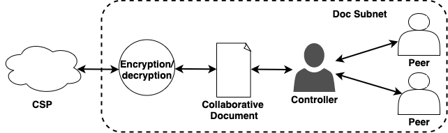

Secure Collaborative and Concurrent Editing

Motivation
Cloud-based online document editing services, such as Google Docs and Office 365, provide an inexpensive and efficient
means of managing documents. However, storing data on cloud also raises certain security and privacy concerns, especially
when the data is of confidential and sensitive nature. Storing data on third-party servers can potentially be compromising
as it gives opportunity to the third-party cloud service providers to turn semi-honest and become curious about user data.
User data stored on third-party servers is
also prone to attacks like virtual machine-based side-channel along with natural
language processing and machine learning-based content search and retrieval techniques. In a
online editing
environment, user data should never be exposed to the cloud in plain text form. Thus, there is a need for secure collaborative
editing frameworks and services. Prior works around secure collaborative editing have several limitations, and some are not practical.
About this research
To that end, this work proposes a suite of frameworks, SecureCEdit and two variations of SecureC2Edit to secure user data
and enable co-authors of collaborative documents to
keep their data confidential while providing collaborative editing services.
- SecureCEdit is a client-server-based secure collaborative editing framework that provides collaborative access to users.
It encrypts user documents on the fly before
committing them to cloud service providers. SecureCEdit uses
Advanced Encryption Standard (AES) to encrypt document contents and is platform-independent, lightweight
with minimal data and
resource requirements.
- SecureC2Edit is a structured peer-to-peer secure collaborative and concurrent editing framework.
It makes use of a novel Hybrid Differential Synchronization algorithm to facilitate both collaborative access and concurrent editing.
- The first variation of SecureC2Edit makes use of the symmetric encryption algorithm, AES to encrypt collaborative document contents.
The primary limitation of
symmetric encryption, key distribution is overcome by a novel asynchronous key distribution algorithm.
- The second variation of SecureC2Edit is keyless and uses Shamir's secret sharing (SSS) as the security mechanism.
Use of SSS enables the framework to be synchronized on every edit, minimizing content loss, and scaling better on collaborative
documents with a large amount of data. The proposed frameworks and their variations are evaluated on performance and security.